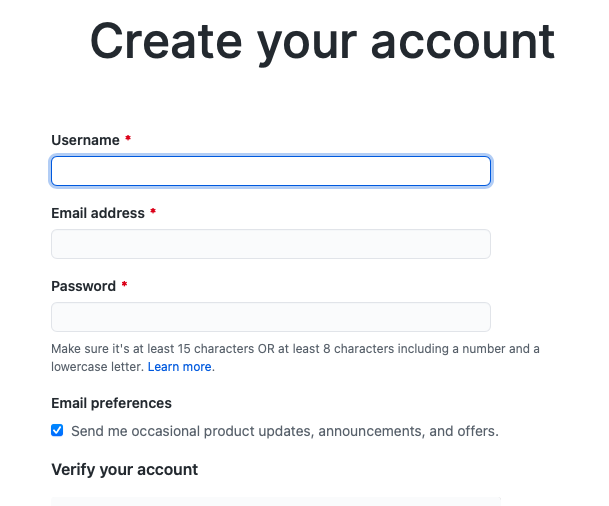
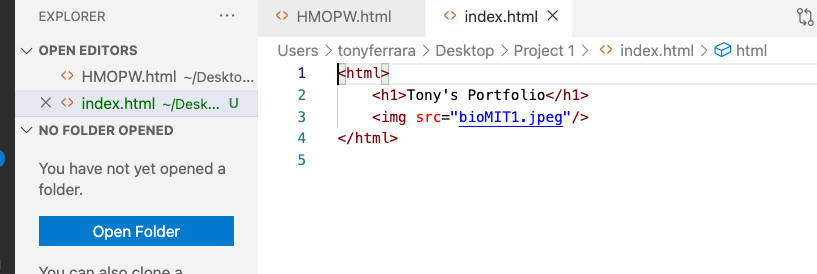
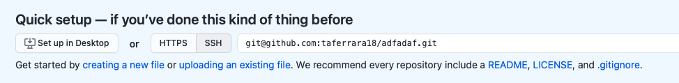
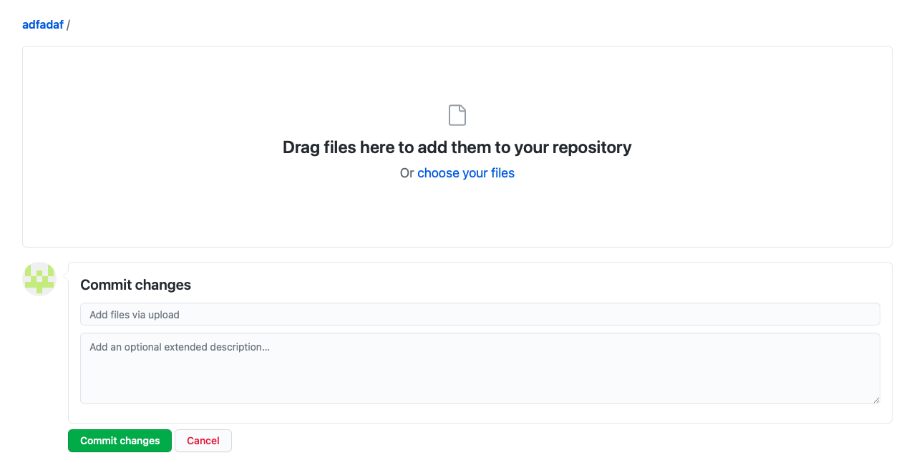

How to Make Your Own Personal Webpage
- Go to www.GitHub.com
- Click on "Sign Up"

- Fill out the form

- Go to "your repositories" on the dropdown menu of your account icon

- Click on the green icon that says "New"

- Under "Repositories name" create your username with "yourusername".github.io and click "Create repository" on the bottom.

Note: within the "username", you should replace it with your actual username that you created in the first place.
- Go to your VS Code and create a new file named "index.html"

Note: copy the exact code shown here, but use your own name and image url.
- Go back to the screen as shown below and click on "uploading an existing file"

- Save the index.html file you just created and upload it here by either drag it or click on "choose your files". Then click commit.

Note: also add the image file that you used in your personal webpage.
- Now, type your "username".github.io in the browser and you should be able to see your personal webpage
Note: this is my personal webpage.
Congratulations! You just created your own first webpage!